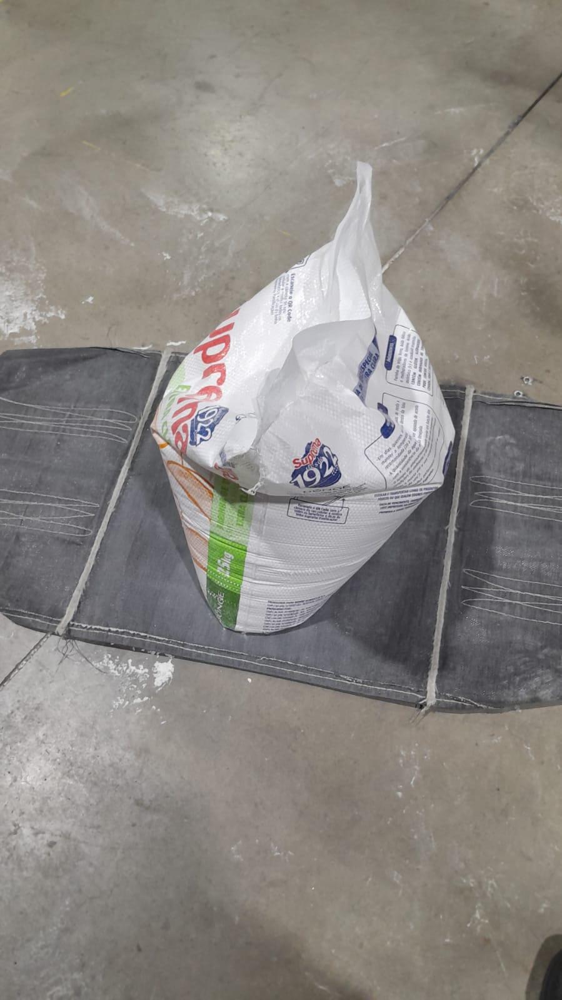
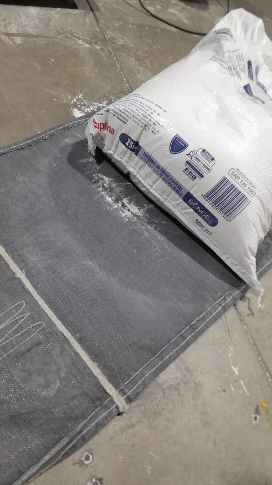
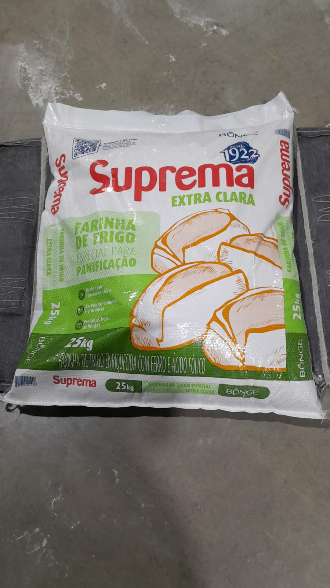
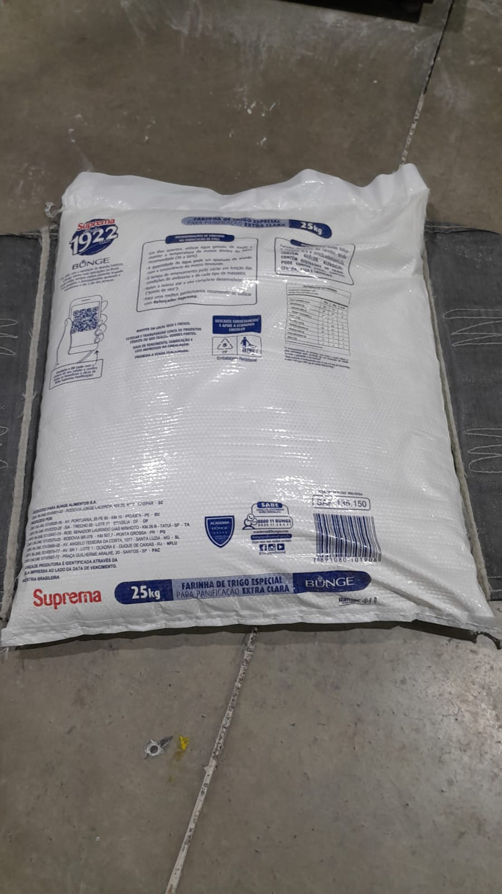
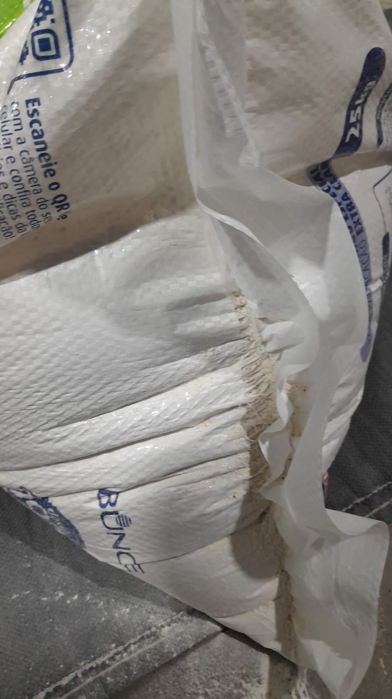

QC-AUD-2026-0710 • Versão 01 • Confidencial
Painel de Controle e Qualidade
Auditoria de Gramatura, Conformidade e Análise de Causa Raiz em Embalagens de Ráfia (Unidade SC)
Peso Médio Global
63,89 g
Dentro da especificação (64g ± 3%)
Volume de Envio
5.000 un
10 fardos de 500 embalagens
Anomalias Identificadas
4 Ocorrências
Resolvidas e aprovadas
Ações Corretivas (Kaizen)
100% Executada
Guias de Nylon instaladas
Gráfico 1: Controle de Gramatura Individual por Fardo
Vazão 125Gráfico 2: Médias por Saco – Lote P (Controle Comparativo)
Lote P1. Controle Estatístico de Pesagem (Dados)
Valores sequenciais das amostras de pesagem das Bobinas 1 e 2.
| Lote / Identificação | Amostra 1 (g) | Amostra 2 (g) | Amostra 3 (g) | Média Parcial (g) | Status |
|---|---|---|---|---|---|
| Bobina 1 - Fardo 1 | 64,07 | 63,84 | 64,50 | 64,14 | Conforme |
| Bobina 1 - Fardo 2 | 63,80 | 63,88 | 64,46 | 64,05 | Conforme |
| Bobina 1 - Fardo 3 | 64,33 | 64,58 | 63,99 | 64,30 | Conforme |
| Bobina 2 - Fardo 4 | 63,09 | 62,87 | 62,75 | 62,90 | Conforme |
| Bobina 2 - Fardo 5 | 63,83 | 63,75 | 63,73 | 63,77 | Conforme |
| Bobina 2 - Fardo 6 | 63,61 | 63,68 | 63,86 | 63,72 | Conforme |
| Bobina 2 - Fardo 7 | 63,56 | 63,69 | 63,63 | 63,63 | Conforme |
| Bobina 2 - Fardo 8 | 63,51 | 63,46 | 63,58 | 63,52 | Conforme |
2. Amostragem Global (Lote P — 500 Unidades)
64,37 g
Média do Lote
66,40 g
Máximo (Fardo 3P)
63,30 g
Mínimo (Fardo 6P)
100%
Aprovação
| Fardo Auditado | Tamanho Amostra | Média por Saco (g) | Status de Controle |
|---|---|---|---|
| Fardo 1P | 500 Amostras | 64,40 | Conforme |
| Fardo 2P | 500 Amostras | 64,50 | Conforme |
| Fardo 3P | 500 Amostras | 66,40 | Conforme |
| Fardo 4P | 500 Amostras | 64,50 | Conforme |
| Fardo 5P | 500 Amostras | 64,50 | Conforme |
| Fardo 6P | 500 Amostras | 63,30 | Conforme |
| Fardo 7P | 500 Amostras | 63,80 | Conforme |
| Fardo 8P | 500 Amostras | 64,70 | Conforme |
| Fardo 10P | 500 Amostras | 64,00 | Conforme |
| Fardo 12P | 500 Amostras | 63,60 | Conforme |
3. Ensaios Mecânicos de Impacto (Queda Livre a 1,20 m)
Simulação de quedas sucessivas em sacos cheios (50 kg) para atestar resistência das costuras e da laminação.
| ID Saco Teste | Carga (kg) | Quedas Suportadas | Face Impactada | Resultado | Observações |
|---|---|---|---|---|---|
| Saco Amostra 1 | 50 kg | 3 / 3 | Fundo | Aprovado | Sem deformações ou rasgos. |
| Saco Amostra 2 | 50 kg | 3 / 3 | Lateral | Aprovado | Pequeno estiramento na costura. |
| Saco Amostra 3 | 50 kg | 3 / 3 | Face Principal | Aprovado | Película de laminação intacta. |
| Saco Amostra 4 | 50 kg | 3 / 3 | Fundo | Aprovado | Estiramento elástico no vinco. Aprovado. |
Galeria de Ensaios Mecânicos (Clique para ampliar):

Fundo 1 (Inteiro)

Fundo 2 (Detalhe)

Face 1 (Aprovada)

Face 2 (Detalhe)

Vinco 1 (Preservado)
Vinco 2 (Aprovado)

Evidências de Pesagem (Balança Digital)
Registros reais das pesagens das amostras capturados na balança:
63,83 g
63,46 g
63,51 g
63,63 g
63,58 g
63,69 g
4. Matriz de Rastreamento de Anomalias (Bobina 2)
Ocorrências mapeadas no lote Bobina 2, todas corrigidas e aprovadas:
Figura 3
Corpo estranho (asa de inseto) prensado na laminação externa.
Figura 4
Falha na transferência de tinta no QR Code.
Figura 5
Fita de urdume dobrada gerando vinco e falha na estampa.
Figura 6
Múltiplos microfuros por abrasão na marca Bunge.
5. Melhoria Corretiva & Causa Raiz (Kaizen / 5W2H)
Ação Preventiva Kaizen: Instalação de guias de Nylon de engenharia nos roletes de tracionamento metálicos. A mudança eliminou o atrito metal-tecido na laminação da Bobina 2, garantindo aprovação total dos sacos e mitigando o risco de abrasão.
What O quê?
Abrasão lateral e microfuros na laminação.
Why Raiz
Atrito severo metal-tecido nas guias laterais.
Where Onde?
Rolete de tração (laminação).
How Como?
Instalação de guias laterais em Nylon de engenharia.
Status Final: Causa raiz mitigada. Lotes aprovados e processo estabilizado.